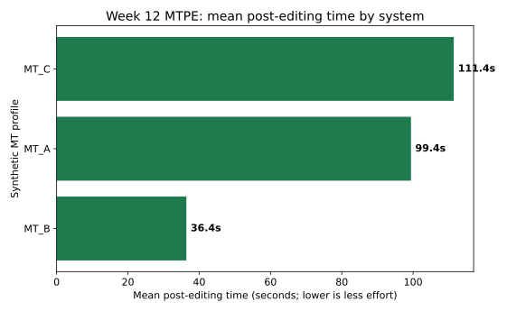
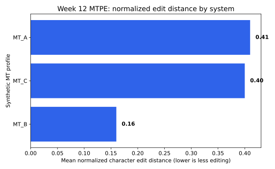

Tuần 12
MTPE workflow
Từ raw MT đến post-edited text và effort evidence.
30system-segment rows
secondstime logs
Levenshteinedit distance
Bridge
Week 11 đo overlap; Week 12 đo editing effort
Một bản dịch có metric tốt vẫn có thể cần chỉnh nếu sai style, thuật ngữ, hoặc thiếu ý.
Week 11metric overlap
MT outputbefore
post-editafter
Week 12effort
Question
MT profile nào cần ít hậu biên tập hơn?
Ta đọc time, edit distance và revision labels cùng nhau.
Which profile needs less post-editing effort?
Unit
Một row = source + MT output + post-edit
vi_mt_outputbefore editing
vi_posteditafter editing
pe_time_secondseffort log
Before/After
Post-edit là bản đã sửa để dùng được
MT output
Địa phương có thể xây dựng phương án triển khai.
Post-edit
Cơ quan giáo dục địa phương có thể xây dựng phương án triển khai theo điều kiện của từng trường.
Time
pe_time_seconds là evidence chính
Lower time thường nghĩa là ít observed effort hơn trong dataset này.
lower seconds = less observed effort
Edit distance
Levenshtein distance đếm visible edits
Thêm, xóa, hoặc thay ký tự để biến MT output thành post-edit.
insert + delete + substitute
Caution
Edit distance là proxy, không phải cognitive effort
Yếu: distance thấp nên editor không mất công
Tốt hơn: distance thấp, nhưng cần đọc time và note
Python
Tạo column mới từ hai text columns
So sánh vi_mt_output với vi_postedit theo từng row.
data["char_edit_distance"] = [
Levenshtein.distance(mt, pe)
for mt, pe in zip(data["vi_mt_output"], data["vi_postedit"])
]Table
MTPE effort summary table
profilemean timeedit dist.revise rows
MT_B36.40.165
MT_A99.40.4110
MT_C111.40.410
Labels
Revision types giải thích effort
omissionrestore missing meaning
terminologyrepair domain terms
stylepolish register
Figure
Figure 1: post-editing time

Figure
Figure 2: normalized edit distance

Interpret
Time và edit distance có thể lệch nhau
Một sửa nhỏ về thuật ngữ có thể mất thời gian nếu cần tra cứu.
number + label + note = safer interpretation
Writing
Results = time + labels + limitation
Profile ___ cần ít thời gian nhất; limitation là ___.
Next